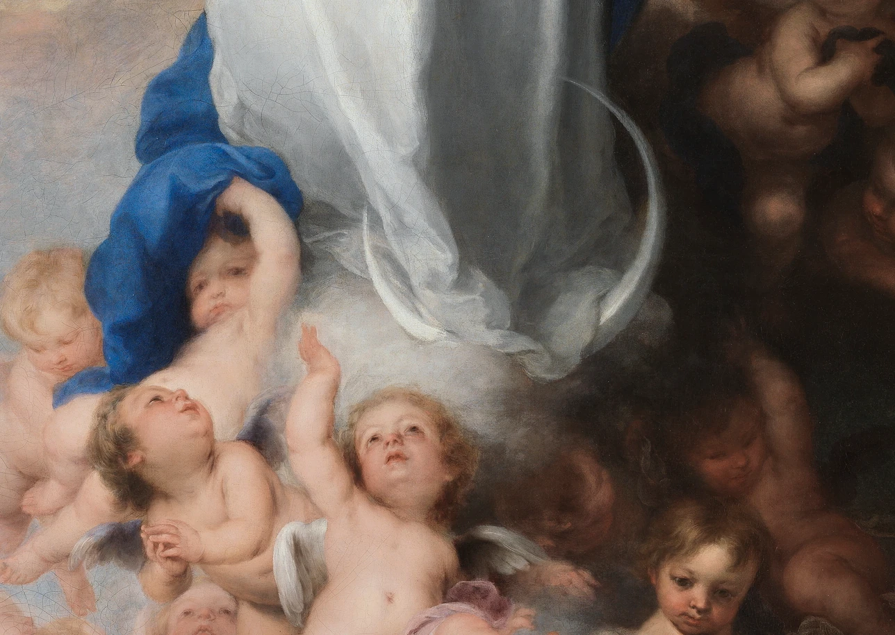
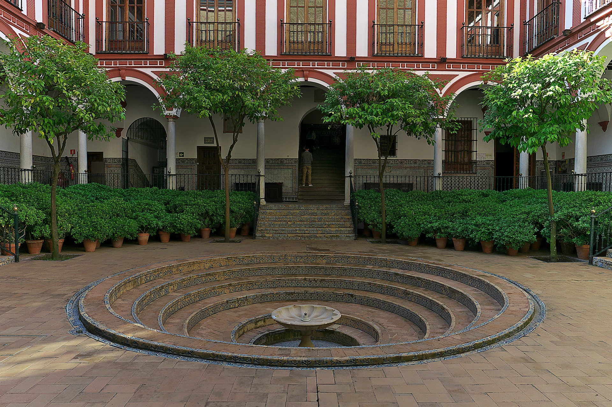
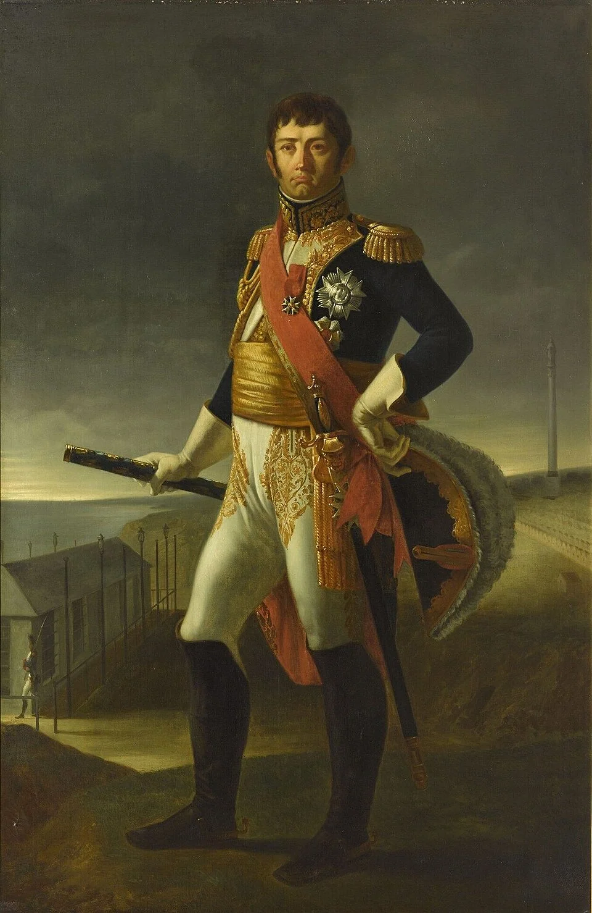
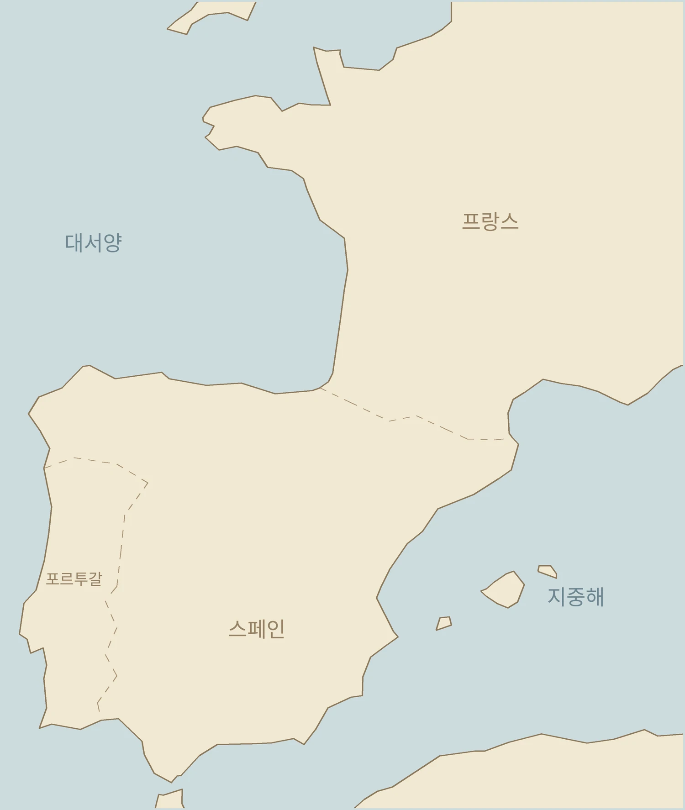
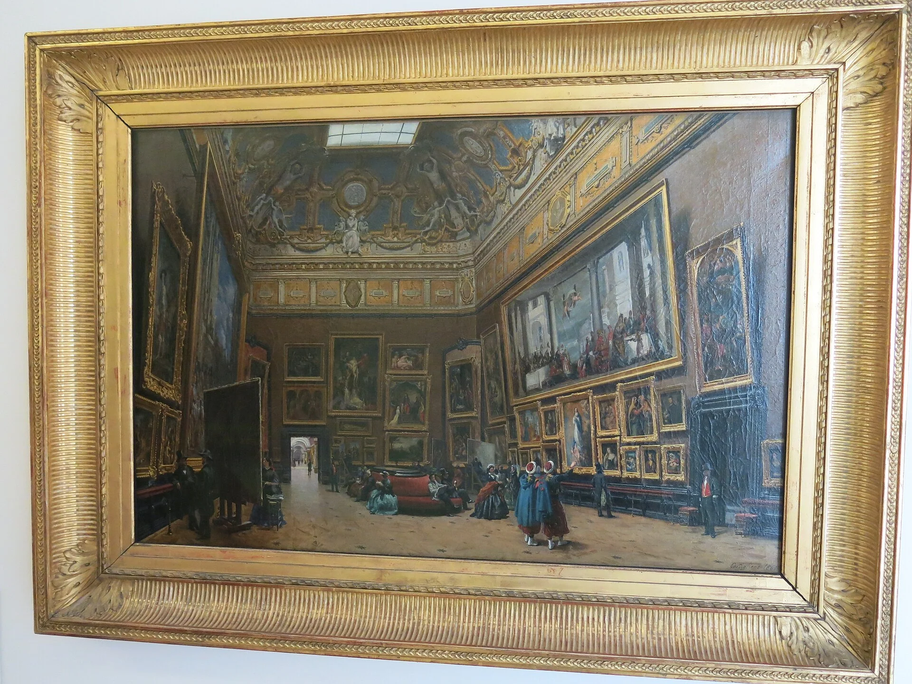
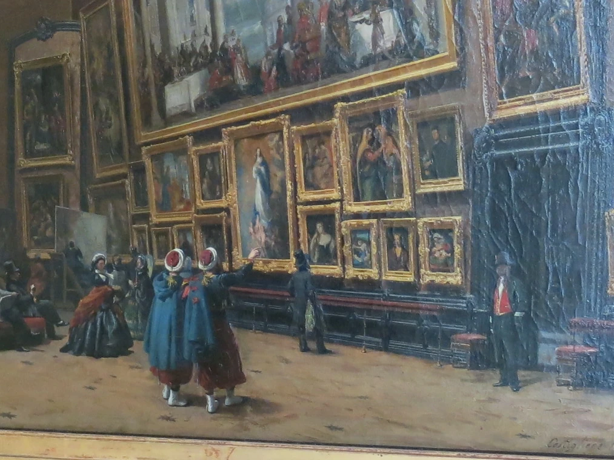

아직 펼치지 않은 카드
빛과 어둠 사이의 얼굴 · 4무리요 「로스 베네라블레스의 무염시태」이 그림은 전쟁 중에 그림만 떼어져 다른 나라로 끌려갔어요. 고향 스페인으로 돌아오기까지 몇 년이 걸렸을까요?멀리 갔다가 128년 만에 돌아온 그림이래!
1660~1665년 무렵 그림 · 1941년 귀환스페인 세비야 → 프랑스 파리 → 스페인 마드리드 프라도 미술관
무리요 「로스 베네라블레스의 무염시태」
세비야의 화가 무리요(Murillo)가 그린 이 성모는, 마리아가 원죄 없이 잉태되었다는 가톨릭의 믿음, 곧 ‘무염시태’를 그린 그림이에요. 이 그림은 1813년 전쟁 중에 액자만 남기고 프랑스로 떠났어요. 파리의 술트 원수(군대의 가장 높은 계급) 집과 루브르 박물관을 거쳐, 128년 만인 1941년에야 스페인으로 돌아왔어요. 그림이 실제로 지나간 길을 지도 위에서 한 구간씩 따라가 보세요.
이 마리아 그림은 전쟁 때 액자만 두고 먼 나라로 떠났대. 128년 만에 돌아왔어! 그림이 어디를 다녀왔는지 지도에서 따라가 볼까?
검수 전 시안이에요(기준서 1판). 그림이 지나간 곳과 해는 프라도 미술관의 소장 내력을 따랐고, 기록마다 다른 숫자는 따로 밝혔어요. 지도는 이 안내서가 그린 길잡이 그림이에요.
시안 확인용카드 단계 미리 보기
1
네베 신부의 그림
세비야 대성당의 참사회원 후스티노 데 네베(Justino de Neve)는 화가 무리요의 친구이자 그림을 주문해 준 사람이었어요. 참사회원은 대성당을 함께 맡아 돌보는 사제예요. 프라도 미술관에 따르면 이 그림은 1685년 네베의 소장품이었다가, 1686년 세비야의 사제 양로원(로스 베네라블레스)으로 갔어요.
미술사 해설 누리집 스마트히스토리는 이 양로원을, 은퇴한 사제들을 위해 막 문을 연 자선 시설이라고 소개해요. 사진은 지금도 남아 있는 양로원의 안뜰이에요.

프라도는, 네베의 친구 토레 파르판이 1665년의 성당 축제를 적어 이듬해 펴낸 책에 나오는 이 그림의 액자가 지금도 양로원에 있다고 설명해요. 그 액자에는 다윗의 망대, 봉해 둔 샘, 종려나무와 사이프러스처럼 캔버스에는 없는 성모의 상징들이 있었을지도 모른다고 덧붙여요.
세비야의 네베 신부님이 친구 무리요에게 이 그림을 부탁했대. 그림은 나이 든 신부님들이 사는 집에 걸렸어.
물어보기이 안뜰에서 무엇이 보여?
2
전쟁과 술트 원수
1810년 나폴레옹의 프랑스군이 세비야를 차지했어요. 그 지휘관 술트(Soult) 원수는 이 지역을 다스리는 군사 총독이었어요. 원수는 군대의 가장 높은 계급이에요.
그해 2월, 그림들을 세비야 알카사르로 옮기라는 명령이 나왔어요. 알카사르는 옛 왕궁이에요. 이곳은 전쟁 동안 가장 큰 그림 창고가 되어, 999점이 목록에 올랐어요. 프라도의 기록에도 이 그림은 1810년 알카사르에 있었다고 적혀 있어요.

1813년 그림은 술트의 소장품이 되어 프랑스로 갔어요. 프라도 미술관은 술트가 가지고 있는 동안 그림 뒤에 새 천을 덧대는 일을 하다가 열을 너무 세게 써서, 그림이 그을리고 오그라들고 부풀었다고 설명해요.
전쟁 때 프랑스 장군 술트가 세비야에 왔어. 그리고 이 그림을 프랑스로 가져갔대.
물어보기액자는 두고 그림만 가져가면, 남은 액자는 어떻게 보일까?
3
128년의 길
프라도 미술관의 소장 내력(그림이 누구 손을 거쳐 왔는지 적은 기록)에는 이 그림이 머문 곳과 해가 차례로 적혀 있어요. 세비야의 양로원, 세비야 알카사르, 파리의 술트 원수의 집, 루브르 박물관, 그리고 마드리드의 프라도 미술관이에요.
‘다음 곳으로’를 누를 때마다 그림이 실제로 지나간 길이 한 구간씩 그려져요.
‘다음 곳으로’를 눌러, 그림이 실제로 지나간 길을 따라가 보세요.

세비야 · 사제 양로원세비야 · 알카사르파리 · 술트 원수의 집파리 · 루브르 박물관마드리드 · 프라도 미술관그림이 지나간 길 · 해안선은 어림한 길잡이 지도 · 이 안내서가 그린 지도 · 해안 도시와 곶의 경위도를 이어 어림함
세비야를 떠난 지 128년 만에 스페인으로 돌아왔어요. 처음의 액자는 지금도 세비야 양로원에 남아 있어요.
지도는 이 안내서가 그린 길잡이 그림이에요. 같은 도시 안의 두 곳(세비야 두 곳, 파리 두 곳)은 알아보기 쉽게 조금 떨어뜨려 찍었어요.
그림이 어디어디 다녀왔는지 지도에서 따라가 보자. ‘다음 곳으로’를 눌러 봐!
물어보기그림이 가장 오래 머문 곳은 어디였어?
4
살롱 카레의 성모
1852년 루브르 박물관이 경매에서 이 그림을 샀어요. 스마트히스토리는 루브르가 이 그림을 박물관의 으뜸 자리인 살롱 카레에, 이탈리아 화가 베로네세와 라파엘로, 레오나르도 다빈치의 그림 곁에 걸었다고 적어요.
사진은 카스틸리오네가 1861년의 살롱 카레를 그린 그림을 찍은 거예요. 오른쪽 벽 큰 그림 아래 줄 가운데에 흰 옷과 파란 겉옷의 성모 그림이 보이고, 그 앞에서 터번을 쓴 두 사람 가운데 하나가 손을 들어 가리켜요. 이 안내서는 이것이 무리요의 그림이라고 보지만, 카스틸리오네 그림의 기록에 그림 이름이 적혀 있지는 않아요.

그 사이에도 처음의 액자는 세비야 양로원에 남아 있었어요(프라도).
이건 옛날 루브르 박물관을 그린 그림이야. 오른쪽 벽에 파란 옷의 마리아 그림이 보여? 누가 손가락으로 가리키고 있어!
물어보기그림 속에서 마리아 그림을 가리키는 사람을 찾았어?
눈 감고 상상해 보기
세비야 양로원의 예배당, 벽에 커다란 빈 액자가 걸려 있어요. 그 안에는 아무것도 없어요. 멀리 파리의 넓은 전시실에서는 사람들의 발소리가 울리고, 금빛 하늘의 성모는 낯선 벽에 걸려 있어요. 128년이 흐른 뒤, 그림은 다시 스페인의 공기 속으로 돌아와요.
눈을 감아 봐. 빈 액자가 벽에 걸려 있어. 그림은 아주 먼 나라에 있어. 그리고 오랜 시간이 지나, 그림이 집 가까이로 돌아와.
나의 자리
오래 떨어져 있다가 제자리로 돌아온 것이 내게도 있나요?
잃어버렸다가 다시 찾은 물건이 있어?
마음에 닿는 한 줄을 고르거나 직접 써 보세요. 한 줄을 남기면 이 자리의 도장이 찍혀요. 이 기기에만 저장돼요.
더 깊이
이야기를 보다 궁금해질 만한 것들이에요. 답을 읽거나 짧은 영화로 보세요.
술트는 그림을 훔친 건가요, 산 건가요?

돌아오기까지 왜 128년이나 걸렸나요?
뒷이야기
아직 펼치지 않은 이야기예요. 누르면 이야기가 펼쳐지고 색이 돌아와요. 더 알고 싶으면 근거를 따라가 보세요.
다 펼치면, 다음에 오실 때 새 이야기가 찾아와요.
오늘의 뒷이야기는 여기까지예요. 다음에 오시면 새 이야기가 기다리고 있어요.
펼친 뒷이야기 · 누르면 다시 볼 수 있어요
더 찾아보기
기록마다 다른 점
언제 그렸나 프라도의 작품 정보는 1660~1665년, 같은 프라도의 복원 보고와 영어 위키백과는 1678년 무렵으로 적어요. 프라도는 이 그림의 액자가 1666년 기록에 나온다고 설명해요.
얼마에 샀나 영어 위키백과와 이 카드 책 앞면은 615,300프랑, 스마트히스토리는 615,000프랑으로 적어요.
언제 돌아왔나 프라도의 목록은 1941년 6월 27일에 넘겨받았다고 적고, 스페인의 한 가톨릭 매체는 1940년 12월 6일, EFE 통신 기사(2026)는 1940년 10월에 왔다고 적어요. 같은 매체는 1852년 경매에 스페인 여왕 이사벨 2세와 러시아 황제 니콜라이 1세도 값을 불렀다고 적지만, 이 안내서는 다른 자료로 확인하지 못했어요.
액자의 상징 프라도는 그림에 없는 상징들이 처음 액자에 있었을 ‘수도’ 있다고 적고, 덜위치 미술관은 조각 액자에 있다고 적어요.
직접 가 보기
확인한 날 · 2026년 11월 18일 · 바뀌기 쉬운 정보라 정기적으로 다시 확인해요
그림은 마드리드 프라도 미술관 16번 전시실에 걸려 있어요(프라도 누리집). 여는 시간은 프라도 누리집에서 확인하세요.
처음 걸렸던 세비야의 사제 양로원(로스 베네라블레스) 건물은 지금도 남아 있어요. 프라도에 따르면 그 안에 그림의 액자가 남아 있어요.
128년의 길 따라가기 금박
지도 위 길을 마지막 곳까지 따라가면 카드에 금박이 입혀져요.
세비야에서 마드리드까지 그림의 길 따라가기
아이와 함께 끝까지 채색
아이와 함께 ‘영화처럼 보기’를 끝까지 보면 카드가 채색돼요.
아이와 함께 ‘영화처럼 보기’를 끝까지 보기
근거 보기 (16)
- 프라도 미술관: La Inmaculada Concepción de los Venerables — 1660~1665년, 274×190cm, 16번 전시실, 네베 1685년·양로원 1686년·알카사르 1810년·술트 1813~1852년·루브르 1852년·1941년 교환(6월 27일 인도), 1666년 토레 파르판이 적은 액자가 양로원에 남음, 캔버스에 없는 상징
- 프라도 미술관: The Restoration of The Soult Immaculate Conception — 1813년 술트의 소장, 안감 붙이기의 열 손상(그을림·오그라듦·부풂), 1852년 루브르, 1937년 손질, 1941년 프라도, 2007년 복원, 1678년 무렵
- 스마트히스토리: Murillo, The Immaculate Conception of Los Venerables — 친구이자 후원자 네베, 은퇴 사제를 위한 막 문을 연 자선 시설, 나폴레옹의 군사 총독 술트, 1852년 경매 615,000프랑·당시 최고가, 살롱 카레에 베로네세·라파엘로·레오나르도와 함께, 1941년 프라도
- 가르시아 산체스·모랄레다 가메로, 「산 페르난도 왕립 아카데미와 독립 전쟁 뒤 교회 재산의 반환」, MDCCC 1800 9권(2020) — 1810년 2월 알카사르로 옮기라는 명령, 999점, 술트
- ARS 매거진(2023) 술트 연구 — 조제프 왕의 명령으로 세비야 왕궁 알카사르에 보관된 그림들
- 술트 연구 학위 논문(core.ac.uk) — 1810년 2월 1일 안달루시아 군사 총독으로 세비야에 들어감
- 스페인 정부(국토행정부) 자료 「엘체의 귀부인」 — 제2차 세계 대전 중 페탱과 프랑코 정부의 문화재 교환, 엘체의 귀부인·과라사르 보물·무리요의 무염시태, 프라도의 함께 보기 전시
- 프랑스 문화부 POP(조콩드): 카스틸리오네 「1861년의 살롱 카레」 — RF 3734, 69×103cm, 루브르 회화부
- 『하퍼스』 1884년 4월호: ‘루브르 살롱 카레의 무리요 「무염시태」’ 삽화
- 인포바티카나(2019): 1852년 경매(이사벨 2세·니콜라이 1세가 값을 불렀다고 적음), 1940년 12월 6일 귀환이라고 적음, 스페인이 내준 벨라스케스의 마리아나 왕비 초상과 엘 그레코의 코바루비아스 초상 — 다른 자료와 대조용
- 브리태니커 백과사전: Immaculate Conception — 마리아가 잉태된 첫 순간부터 원죄에서 지켜졌다는 가톨릭 교리(첫머리 풀이)
- 덜위치 미술관: 「무리요와 후스티노 데 네베 — 우정의 예술」 전시 설명판 — 네베의 친구 토레 파르판이 1665년 산타 마리아 라 블랑카 성당 축제를 책으로 남김(장면 1 길잡이), 무리요가 뺀 상징이 조각 액자에 있음
- 브리태니커 백과사전: Joseph Bonaparte — 나폴리 왕(1806~08), 스페인 왕(1808~13)(길 2 풀이)
- 브리태니커 백과사전: Vichy France — 1940년 7월~1944년 9월, 독일에 진 뒤의 프랑스 정권, 페탱(길 5 풀이)
- EFE 통신 기사(엘 에스파뇰, 2026년 2월 12일): 엘체의 귀부인이 돌아온 지 85년 — 스페인이 내준 벨라스케스의 마리아나 왕비 초상·엘 그레코의 그림·고야의 태피스트리, 무염시태는 1940년 10월에 옴(열쇠 3 · 기록마다 다른 점)
- 영어 위키백과: The Immaculate Conception of Los Venerables — 길잡이로만(1678년 무렵, 615,300프랑, 액자가 양로원에 남음)
그림·사진·소리 출처
- 이 안내서가 그린 지도 · 해안 도시와 곶의 경위도를 이어 어림함
- 그림: 바르톨로메 에스테반 무리요 · 퍼블릭 도메인 · 위키미디어 공용
- 사진: José Luis Filpo Cabana · CC BY-SA 4.0 · 위키미디어 공용
- 그림: 루이앙리 드 뤼데르(장 브로크를 본뜸) · 퍼블릭 도메인 · 위키미디어 공용
- 그림: 주세페 카스틸리오네 · 사진: Tangopaso · 퍼블릭 도메인 · 위키미디어 공용
- 그림: 바르톨로메 에스테반 무리요 · 퍼블릭 도메인 · 위키미디어 공용
- 그림: 바르톨로메 에스테반 무리요 · 퍼블릭 도메인 · 위키미디어 공용
- 그림: 바르톨로메 에스테반 무리요 · 퍼블릭 도메인 · 위키미디어 공용
- 그림: 주세페 카스틸리오네 · 사진: Tangopaso · 퍼블릭 도메인 · 위키미디어 공용
- 사진: José Luis Filpo Cabana · CC BY-SA 4.0 · 위키미디어 공용
- 그림: 무리요 「로스 베네라블레스의 무염시태」(1660~1665년 무렵) · 퍼블릭 도메인 · 위키미디어 공용
‘처음 만나는 기독교 문화’의 깊은 카드예요. 사람 얼굴이 알아볼 만큼 나오는 사진은 쓰지 않았어요. 카드 단계와 남긴 글은 이 기기에만 저장돼요.